PLAN-065 / SPEC-132. Peças CANON v01 já aceitas; integração local ainda sem commit. Suíte: zero falhas. Auditoria: zero erros, nove avisos existentes. Smoke: nove fases. Capturas reais do runtime com perfil sintético e resultados preparados para QA.
Os cenários incluem a primeira HQ e o chefe de Dagruve. Touch foi simulado no desktop. O cursor do sistema operacional não aparece nestas capturas: leitura, hotspot e troca de formas na janela real aguardam playtest humano. Nenhuma build ou publicação foi feita.
Auditoria técnica · Evidência e roteiro de playtest
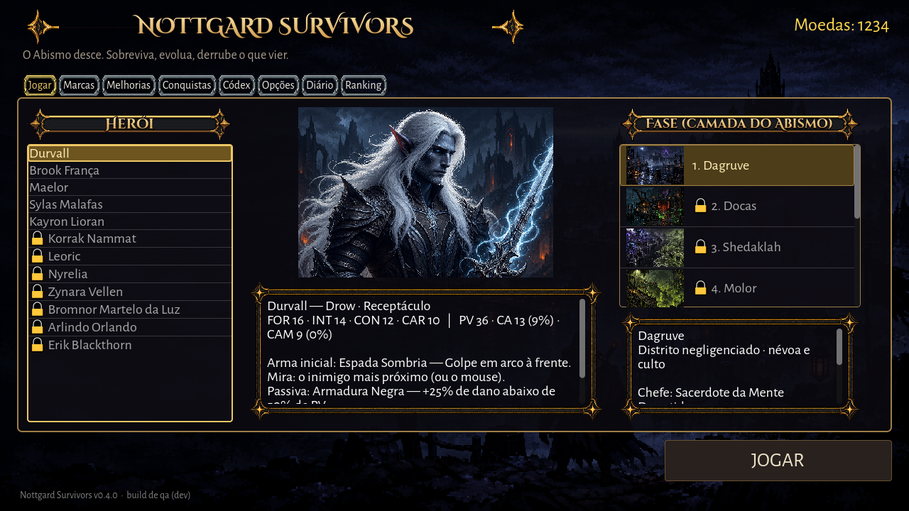
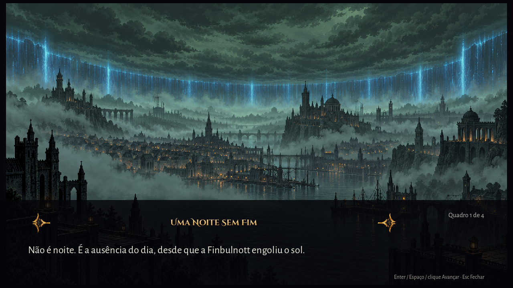
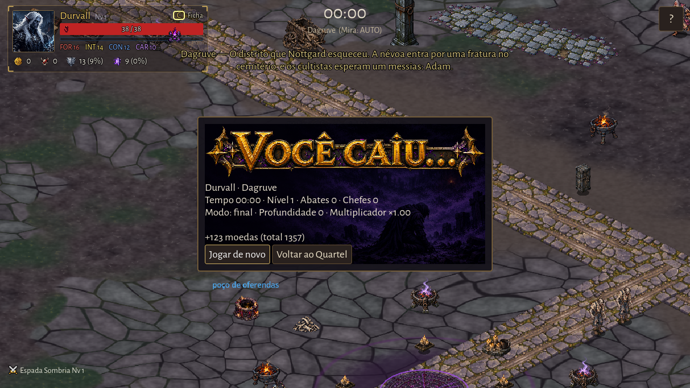
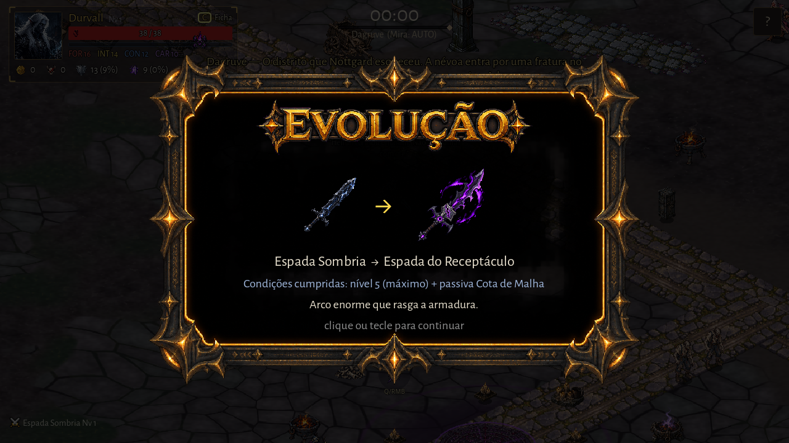
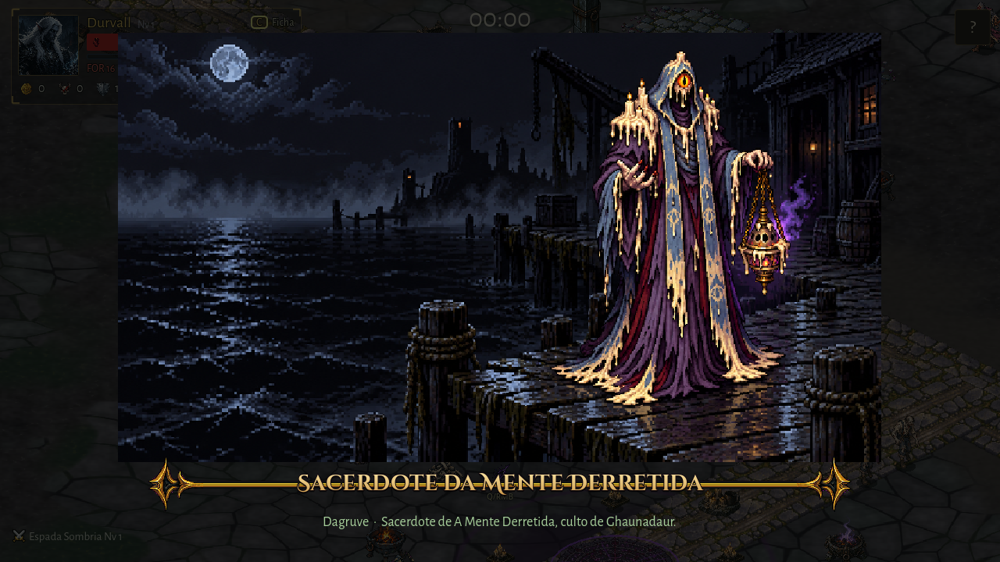
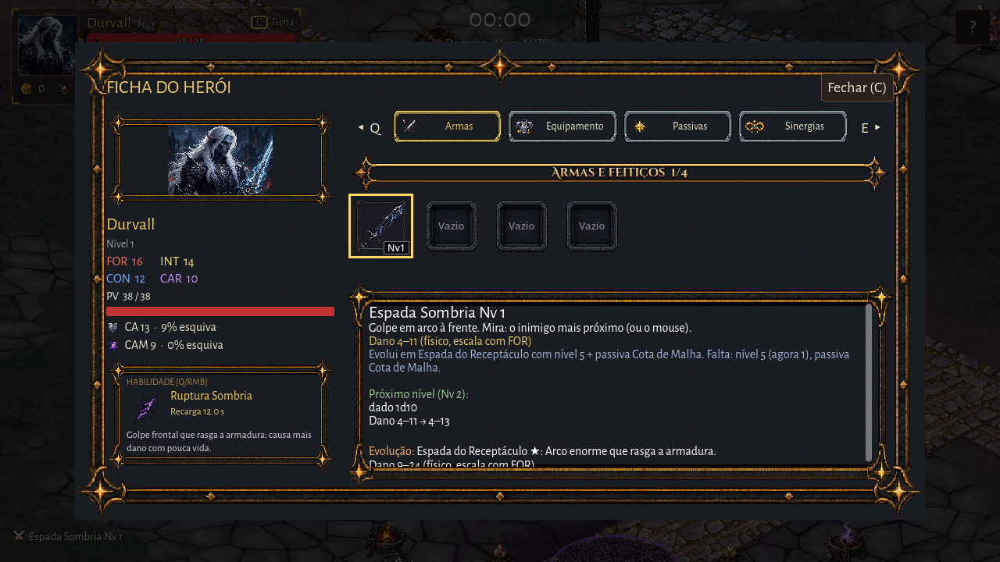
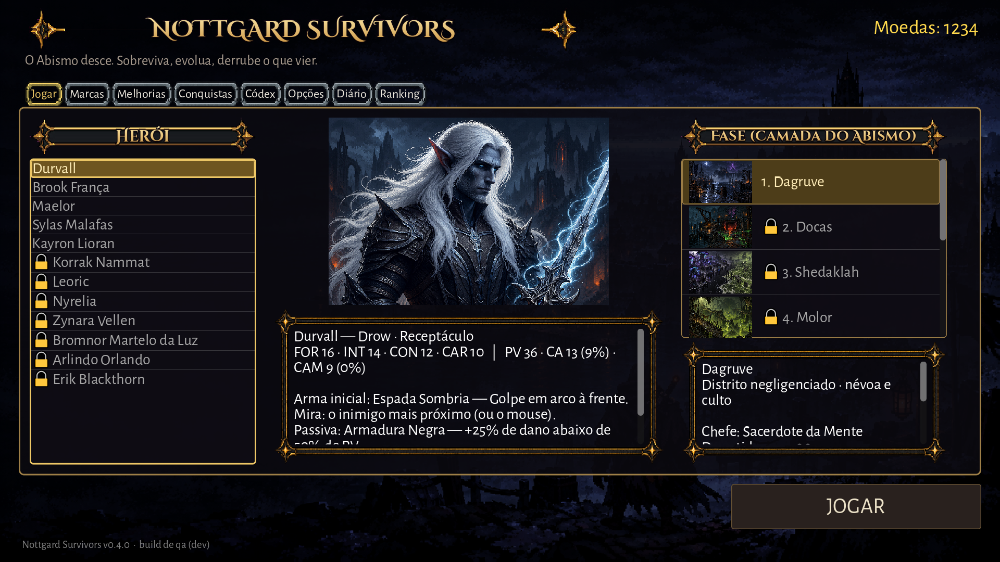
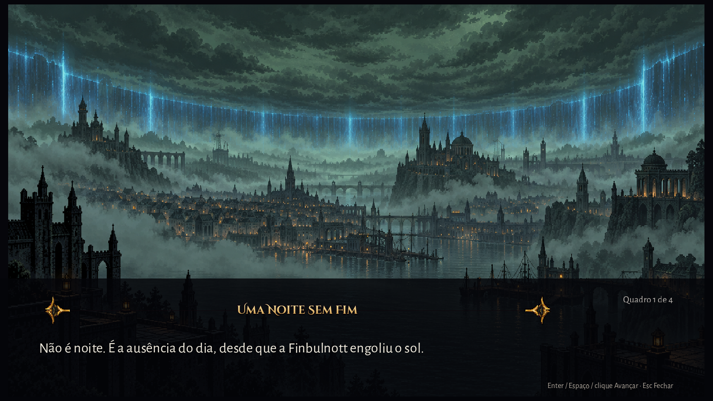
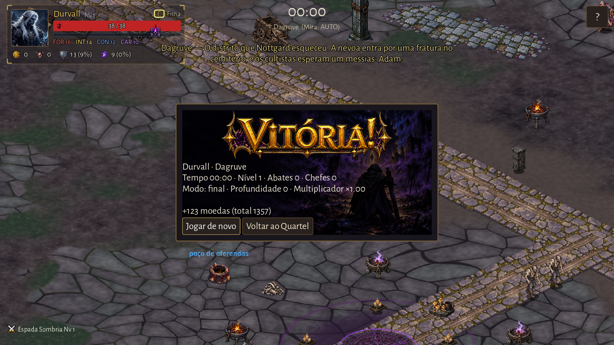
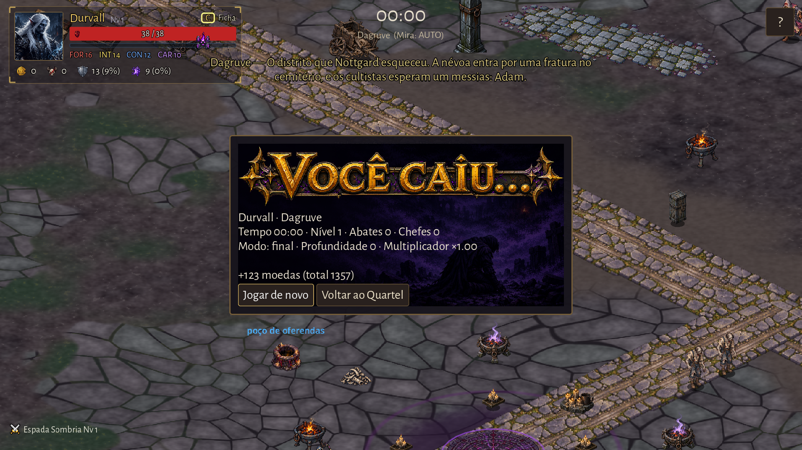
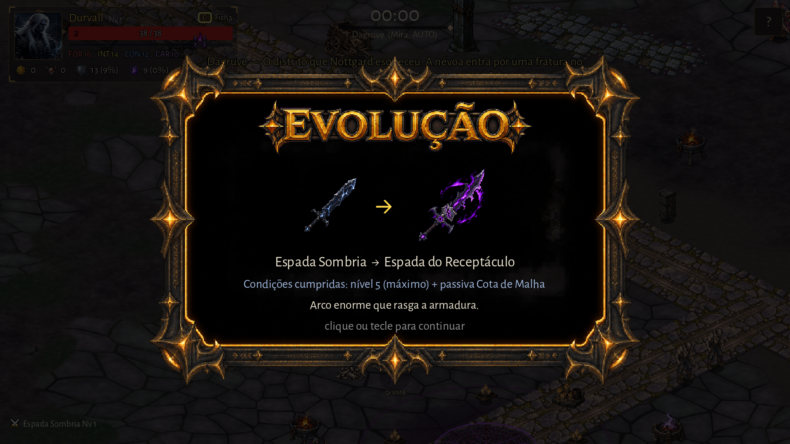
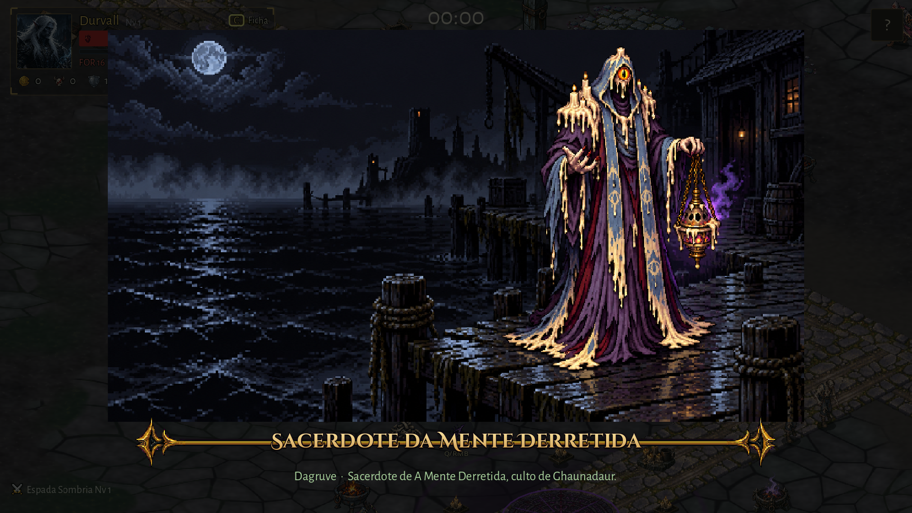
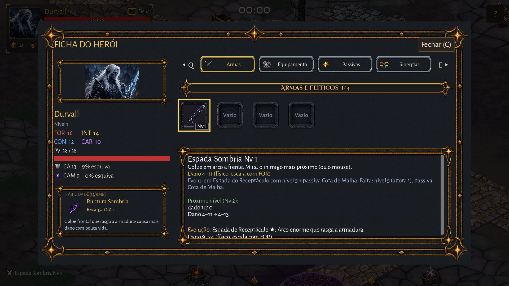
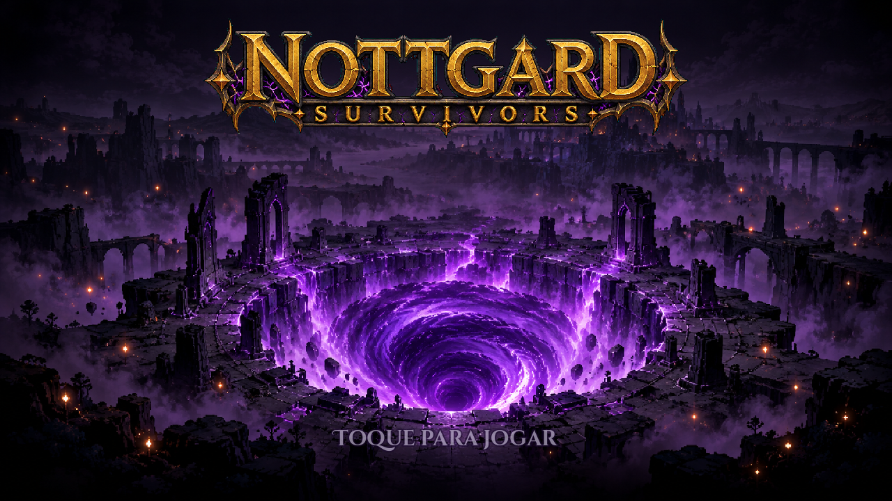
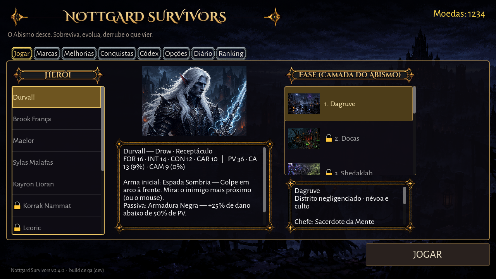